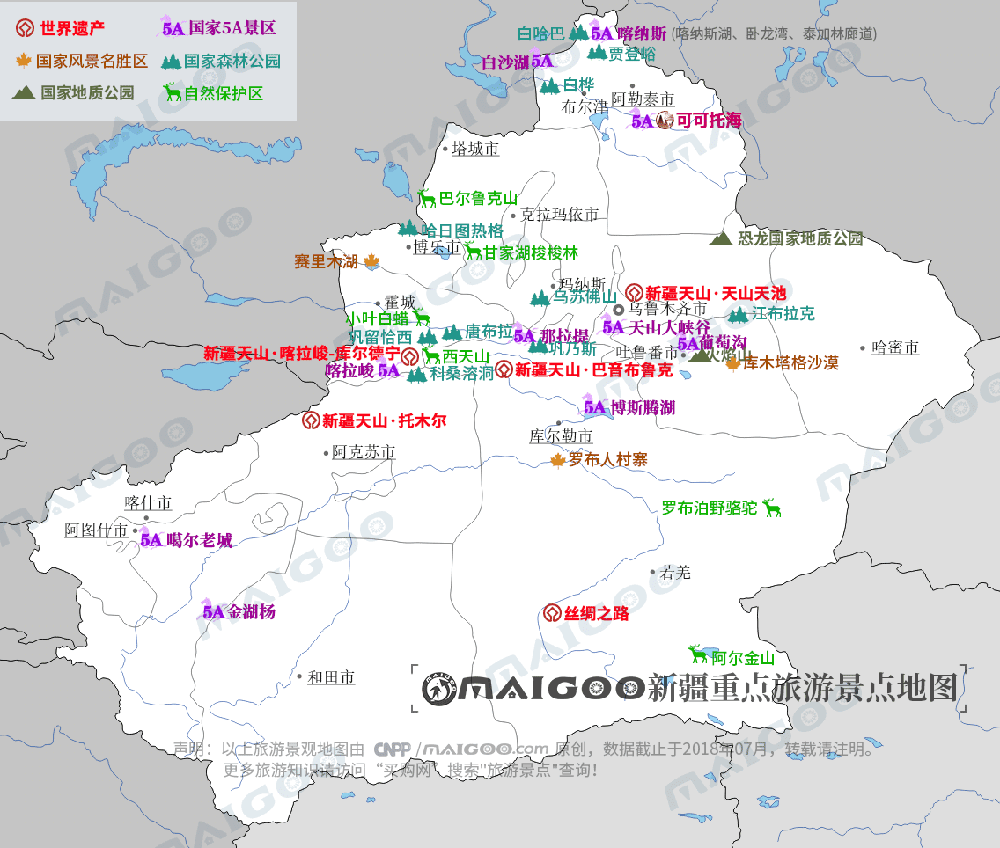
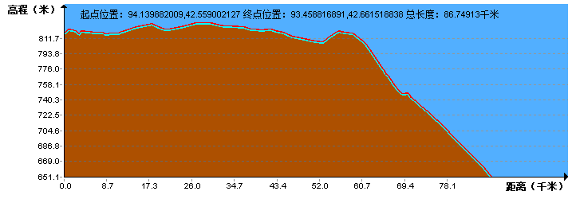
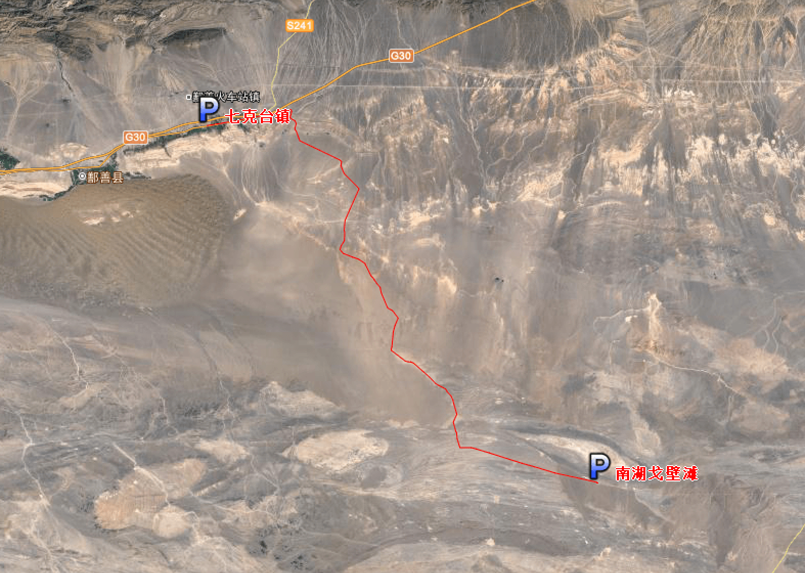
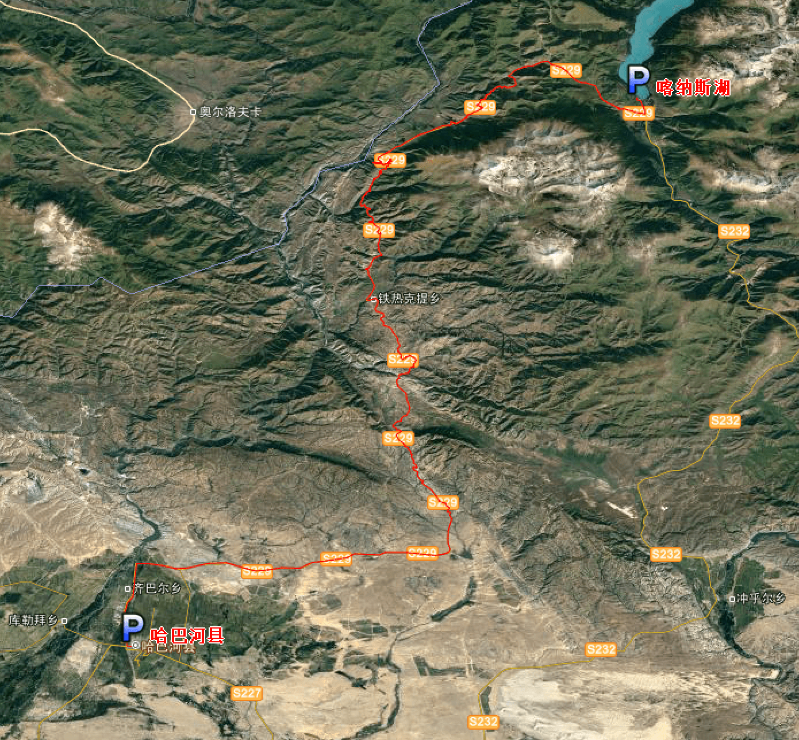
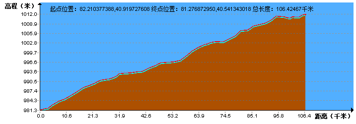

| | | | | |
| - | - | - | - | - |
|<b>别名</b>|西域、安西、新疆省||<b>著名景点</b>|天山、高昌古城、吐鲁番、喀纳斯湖、博斯腾湖、魔鬼城等|
|<b>行政区类别</b>|自治区||<b>机 场</b>|乌鲁木齐地窝堡国际机场、石河子花园机场、喀什机场等|
|<b>所属地区</b>|中国西北地区||<b>火车站</b>|乌鲁木齐站、喀什站、哈密站等|
|<b>下辖地区</b>|4地级市、5地区、5自治州、9区直辖县级行政单位||<b>车牌代码</b>|新A-新R|
|<b>电话区号</b>|（+86）0991-0909||<b>GDP</b>|9617.23亿元（2016年）|
|<b>邮政区码</b>|830000-840000||<b>人均GDP</b>|41841元|
|<b>地理位置</b>|中国西北部（73°E~96°E，34°N~48°N）||<b>主要地形区</b>|准噶尔盆地、塔里木盆地|
|<b>面 积</b>|166万平方千米||<b>主要山脉</b>|昆仑山、阿尔泰山、天山|
|<b>人 口</b>|2298.47万（2014年）||<b>主要民族</b>|汉族、维吾尔族、哈萨克族|
|<b>方 言</b>|汉语、维吾尔语、哈萨克语等多民族语言||<b>行政区划代码</b>|650000|
|<b>气候条件</b>|温带大陆性气候||<b>党委书记</b>|陈全国|
|-|-||<b>自治区主席</b>|雪克来提·扎克尔|
| <b>新疆生活文化</b> | <b>新疆地方特色文化</b> | <b>新疆曲艺文化</b> | <b>新疆建筑文化</b> | <b>新疆宗教文化</b> |
| - | - | - | - | - |
| <a href="javascript:;" onclick="live(this);">习俗/民俗</a> | <a href="javascript:;" onclick="feature(this);">龟兹文化</a> | <a href="javascript:;" onclick="art(this);">新疆曲子戏</a> | <a href="javascript:;" onclick="building(this);">维吾尔族民居建筑技艺</a> |-|
| <a href="javascript:;" onclick="live(this);">方言文化</a> | <a href="javascript:;" onclick="feature(this);">刀郎文化</a> | <a href="javascript:;" onclick="art(this);">新疆舞</a> |-|-|
| <a href="javascript:;" onclick="live(this);">节日文化</a> |-| <a href="javascript:;" onclick="art(this);">新疆达瓦孜</a> | - | - |
| <a href="javascript:;" onclick="live(this);">嫁娶文化</a> |-|-|-|-|
| <a href="javascript:;" onclick="live(this);">饮食文化</a> |-|-|-|-|
| <a href="javascript:;" onclick="live(this);">新疆禁忌</a> |-|-|-|-|
## <i class="fa fa-file-text-o"></i>&nbsp;目录（Table of Contents）
+ [I. 总路线图](#one)
+ [II. 景点](#two)
+ [III. 路线规划](#three)
- [1、红柳村 - 骆驼圈镇](#1)
- [2、骆驼圈镇 - 哈密瓜园](#2)
- [3、哈密瓜园 - 戈壁滩](#3)
- [4、戈壁滩 - 南湖戈壁滩](#4)
- [5、南湖戈壁滩 - 七克台镇](#5)
- [6、七克台镇 - 火焰山](#6)
- [7、火焰山 - 阿乐惠镇](#7)
- [8、阿乐惠镇 - 托里乡](#8)
- [9、托里乡 - 乌鲁木齐](#9)
- [10、乌鲁木齐 - 幸福路村](#10)
- [11、幸福路村 - 喀什赛克赛乌勒](#11)
- [12、喀什赛克赛乌勒 - 恰库尔图镇](#12)
- [13、恰库尔图镇 - 克孜勒克热什村](#13)
- [14、克孜勒克热什村 - 布尔津县](#14)
- [15、布尔津县 - 苏克巴斯陶哈拉斯](#15)
- [16、苏克巴斯陶哈拉斯 - 禾木喀纳斯蒙古族乡](#16)
- [17、禾木喀纳斯蒙古族乡 - 喀纳斯湖](#17)
- [18、喀纳斯湖 - 哈巴河县](#18)
- [19、哈巴河县 - 吉木乃县](#19)
- [20、吉木乃县 - 和什托洛盖镇](#20)
- [21、和什托洛盖镇 - 克拉玛依](#21)
- [22、克拉玛依 - 乌苏市](#22)
- [23、乌苏市 - 托托乡](#23)
- [24、托托乡 - 博乐市](#24)
- [25、博乐市 - 赛里木湖](#25)
- [26、赛里木湖 - 霍城县](#26)
- [27、霍城县 - 努拉洪布拉克村](#27)
- [28、努拉洪布拉克村 - 昭苏县](#28)
- [29、昭苏县 - 阿克吐别克乡](#29)
- [30、阿克吐别克乡 - 新源县](#30)
- [31、新源县 - 那拉提度假村](#31)
- [32、那拉提度假村 - 巴音郭楞乡](#32)
- [33、巴音郭楞乡 - 库车县](#33)
- [34、库车县 - 喀斯坎村](#34)
- [35、喀斯村 - 阿拉尔市](#35)
- [36、阿拉尔市 - 沙漠公路A](#36)
- [37、沙漠公路A - 沙漠公路B](#37)
- [38、沙漠公路B - 塔瓦库勒乡](#38)
- [39、塔瓦库勒乡 - 和田市](#39)
- [40、和田市 - 木吉乡](#40)
- [41、木吉乡 - 叶城县](#41)
- [42、叶城县 - 希依提墩乡](#42)
- [43、希依提墩乡 - 疏勒县](#43)
- [44、疏勒县 - 奥依塔克镇](#44)
- [45、奥依塔克镇 - 布伦口乡](#45)
- [46、布伦口乡 - 塔什库尔干塔吉克自治县](#46)
<h2 id="one"><i class="fa fa-circle-o-notch fa-spin"></i>&nbsp;总路线图</h2>
<h2 id="two"><i class="fa fa-star-o"></i>&nbsp;景点</h2>
<img data-src="../imgs/region-line/xinjiang/scene-spot.png" width="50%" height="50%" title="景点"/>

<h2 id="three"><i class="fa fa-spinner fa-pulse"></i>&nbsp;路线规划</h2>
<h4 id="1">1、红柳村 - 骆驼圈镇&nbsp;&nbsp;<i class="fa fa-bicycle fa-2x"></i></h4>
<h4 id="2">2、骆驼圈镇 - 哈密瓜园&nbsp;&nbsp;<i class="fa fa-bicycle fa-2x"></i></h4>

<h4 id="3">3、哈密瓜园 - 戈壁滩&nbsp;&nbsp;<i class="fa fa-bicycle fa-2x"></i></h4>
<h4 id="4">4、戈壁滩 - 南湖戈壁滩&nbsp;&nbsp;<i class="fa fa-bicycle fa-2x"></i></h4>
<h4 id="5">5、南湖戈壁滩 - 七克台镇&nbsp;&nbsp;<i class="fa fa-bicycle fa-2x"></i></h4>

<h4 id="6">6、七克台镇 - 火焰山&nbsp;&nbsp;<i class="fa fa-bicycle fa-2x"></i></h4>
<h4 id="7">7、火焰山 - 阿乐惠镇&nbsp;&nbsp;<i class="fa fa-bicycle fa-2x"></i></h4>
<h4 id="8">8、阿乐惠镇 - 托里乡&nbsp;&nbsp;<i class="fa fa-bicycle fa-2x"></i></h4>
<img data-src="../imgs/region-line/xinjiang/8t.png" title="8、阿乐惠镇 - 托里乡"/>
<h4 id="9">9、托里乡 - 乌鲁木齐&nbsp;&nbsp;<i class="fa fa-bicycle fa-2x"></i></h4>
<h4 id="10">10、乌鲁木齐 - 幸福路村&nbsp;&nbsp;<i class="fa fa-bicycle fa-2x"></i></h4>
<h4 id="11">11、幸福路村 - 喀什赛克赛乌勒&nbsp;&nbsp;<i class="fa fa-bicycle fa-2x"></i></h4>
<img data-src="../imgs/region-line/xinjiang/11.png" width="61%" height="40%" title="11、幸福路村 - 喀什赛克赛乌勒"/>
<h4 id="12">12、喀什赛克赛乌勒 - 恰库尔图镇&nbsp;&nbsp;<i class="fa fa-bicycle fa-2x"></i></h4>
<img data-src="../imgs/region-line/xinjiang/12.png" width="61%" height="40%" title="12、喀什赛克赛乌勒 - 恰库尔图镇"/>
<h4 id="13">13、恰库尔图镇 - 克孜勒克热什村&nbsp;&nbsp;<i class="fa fa-bicycle fa-2x"></i></h4>
<h4 id="14">14、克孜勒克热什村 - 布尔津县&nbsp;&nbsp;<i class="fa fa-bicycle fa-2x"></i></h4>
<h4 id="15">15、布尔津县 - 苏克巴斯陶哈拉斯&nbsp;&nbsp;<i class="fa fa-bicycle fa-2x"></i></h4>
<h4 id="16">16、苏克巴斯陶哈拉斯 - 禾木喀纳斯蒙古族乡&nbsp;&nbsp;<i class="fa fa-bicycle fa-2x"></i></h4>
<h4 id="17">17、禾木喀纳斯蒙古族乡 - 喀纳斯湖&nbsp;&nbsp;<i class="fa fa-bicycle fa-2x"></i></h4>
<h4 id="18">18、喀纳斯湖 - 哈巴河县&nbsp;&nbsp;<i class="fa fa-bicycle fa-2x"></i></h4>

<h4 id="19">19、哈巴河县 - 吉木乃县&nbsp;&nbsp;<i class="fa fa-bicycle fa-2x"></i></h4>
<h4 id="20">20、吉木乃县 - 和什托洛盖镇&nbsp;&nbsp;<i class="fa fa-bicycle fa-2x"></i></h4>
<h4 id="21">21、和什托洛盖镇 - 克拉玛依&nbsp;&nbsp;<i class="fa fa-bicycle fa-2x"></i></h4>
<h4 id="22">22、克拉玛依 - 乌苏市&nbsp;&nbsp;<i class="fa fa-bicycle fa-2x"></i></h4>
<h4 id="23">23、乌苏市 - 托托乡&nbsp;&nbsp;<i class="fa fa-bicycle fa-2x"></i></h4>
<h4 id="24">24、托托乡 - 博乐市&nbsp;&nbsp;<i class="fa fa-bicycle fa-2x"></i></h4>
<h4 id="25">25、博乐市 - 赛里木湖&nbsp;&nbsp;<i class="fa fa-bicycle fa-2x"></i></h4>
<h4 id="26">26、赛里木湖 - 霍城县&nbsp;&nbsp;<i class="fa fa-bicycle fa-2x"></i></h4>
<h4 id="27">27、霍城县 - 努拉洪布拉克村&nbsp;&nbsp;<i class="fa fa-bicycle fa-2x"></i></h4>
<h4 id="28">28、努拉洪布拉克村 - 昭苏县&nbsp;&nbsp;<i class="fa fa-bicycle fa-2x"></i></h4>
<h4 id="29">29、昭苏县 - 阿克吐别克乡&nbsp;&nbsp;<i class="fa fa-bicycle fa-2x"></i></h4>
<h4 id="30">30、阿克吐别克乡 - 新源县&nbsp;&nbsp;<i class="fa fa-bicycle fa-2x"></i></h4>
<h4 id="31">31、新源县 - 那拉提度假村&nbsp;&nbsp;<i class="fa fa-bicycle fa-2x"></i></h4>
<img data-src="../imgs/region-line/xinjiang/31.png" width="61%" height="40%" title="31、新源县 - 那拉提度假村"/>
<h4 id="32">32、那拉提度假村 - 巴音郭楞乡&nbsp;&nbsp;<i class="fa fa-bicycle fa-2x"></i></h4>
<h4 id="33">33、巴音郭楞乡 - 库车县&nbsp;&nbsp;<i class="fa fa-bicycle fa-2x"></i></h4>
<h4 id="34">34、库车县 - 喀斯坎村&nbsp;&nbsp;<i class="fa fa-bicycle fa-2x"></i></h4>
<h4 id="35">35、喀斯村 - 阿拉尔市&nbsp;&nbsp;<i class="fa fa-bicycle fa-2x"></i></h4>

<h4 id="36">36、阿拉尔市 - 沙漠公路A&nbsp;&nbsp;<i class="fa fa-bicycle fa-2x"></i></h4>
<h4 id="37">37、沙漠公路A - 沙漠公路B&nbsp;&nbsp;<i class="fa fa-bicycle fa-2x"></i></h4>
<h4 id="38">38、沙漠公路B - 塔瓦库勒乡&nbsp;&nbsp;<i class="fa fa-bicycle fa-2x"></i></h4>
<img data-src="../imgs/region-line/xinjiang/38t.png" title="38、沙漠公路B - 塔瓦库勒乡"/>
<h4 id="39">39、塔瓦库勒乡 - 和田市&nbsp;&nbsp;<i class="fa fa-bicycle fa-2x"></i></h4>
<h4 id="40">40、和田市 - 木吉乡&nbsp;&nbsp;<i class="fa fa-bicycle fa-2x"></i></h4>
<h4 id="41">41、木吉乡 - 叶城县&nbsp;&nbsp;<i class="fa fa-bicycle fa-2x"></i></h4>
<h4 id="42">42、叶城县 - 希依提墩乡&nbsp;&nbsp;<i class="fa fa-bicycle fa-2x"></i></h4>
<h4 id="43">43、希依提墩乡 - 疏勒县&nbsp;&nbsp;<i class="fa fa-bicycle fa-2x"></i></h4>
<h4 id="44">44、疏勒县 - 奥依塔克镇&nbsp;&nbsp;<i class="fa fa-bicycle fa-2x"></i></h4>
<h4 id="45">45、奥依塔克镇 - 布伦口乡&nbsp;&nbsp;<i class="fa fa-bicycle fa-2x"></i></h4>
<h4 id="46">46、布伦口乡 - 塔什库尔干塔吉克自治县&nbsp;&nbsp;<i class="fa fa-bicycle fa-2x"></i></h4>
<img data-src="../imgs/region-line/xinjiang/46.png" width="61%" height="40%" title="46、布伦口乡 - 塔什库尔干塔吉克自治县"/>